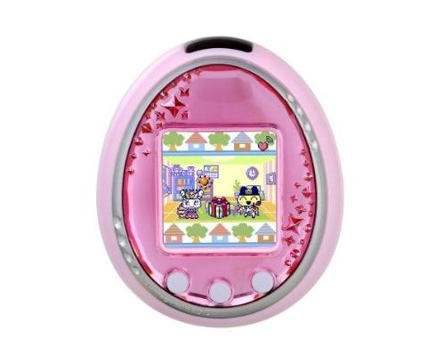
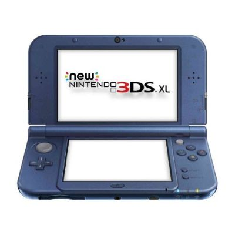
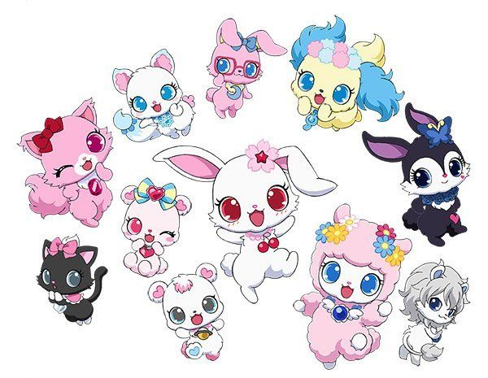

懐かしいものたち
ここでは、2000年代に青春時代・幼少期を過ごした私が強く記憶に残っている思い出のアイテムやアニメをご紹介します。
1. たまごっちシリーズ

画面の中のキャラクターにエサをあげたりフンのお世話をしたりする育成ゲーム。学校から帰るとお世話に追われていた記憶があります。赤外線通信で友達のたまごっちと遊ぶのが流行していました。
当時テレビアニメが地上波で放送されており、OP曲であった「GO-GOたまごっち！」も今でも根強い人気と知名度を誇っています。
2. ニンテンドー3DS

2画面とタッチパネルという革命的なハードとして登場した携帯ゲーム機。「とびだせ どうぶつの森」や「ポケットモンスター」など、友達と持ち寄って公園や家で放課後に遊んだ最高の思い出です。
街中や人が集まる場所で他の3DSと自動的に通信して敵を倒したりする「すれちがい通信」などのデフォルトでダウンロードされていたアプリも人気でした。
3. ジュエルペット

ジュエルペットは、宝石の瞳を持つかわいい動物たちが活躍する、サンリオとセガトイズが生み出したキャラクターシリーズです。アニメやおもちゃなど幅広く展開され、多くの人に親しまれています。
当時発売されていたジュエルパッドは、今のスマホやタブレットのような形状をしていて、あまりジュエルペットに興味のなかった私も親にねだったものです。